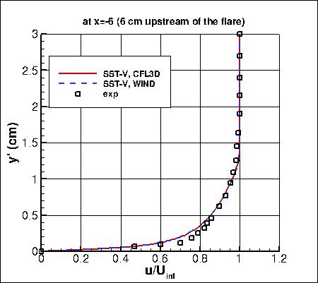
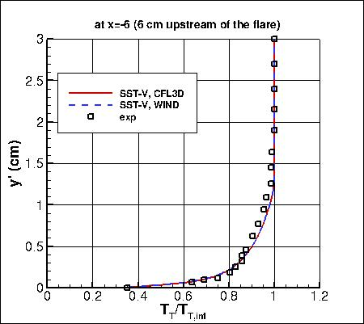
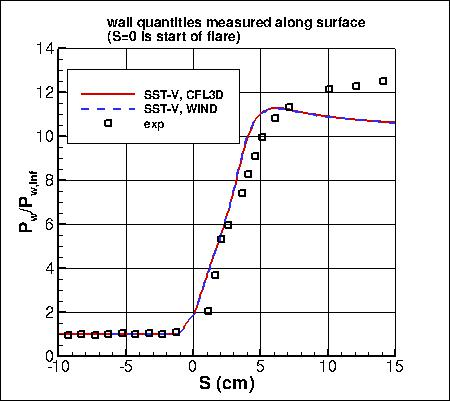
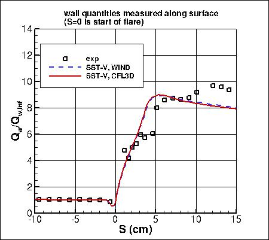

|
Langley Research CenterTurbulence Modeling Resource |
Jump to: SA Results, k-e-Rt Results
Return to: Axisymmetric Shock Wave Boundary Layer Interaction near M=7 Case Intro Page
Return to: Turbulence Modeling Resource Home Page
Axisymmetric Shock Wave Boundary Layer Interaction near M=7 Validation Case
SST-Vm Model Results
Link to SST-Vm equations




Previously on this page the results were reported as SST-V solutions, but more properly they
should be referred to as SST-Vm. At this time, the effects of the model differences on this case have not been investigated.
Note that thorough
grid studies were not performed for validation cases such as this one.
Some effort was made to ensure reasonable grid resolutions, but there may still be
small noticeable discretization errors. Therefore, these validation results shown should be considered
representative, but not "truth."
The plots shown compare the SST-Vm results from two independent
CFD codes: CFL3D and WIND, along with experimental data.
CFL3D used freestream turbulence intensity=0.1% and freestream turbulent viscosity (relative to laminar)=0.01
(additional details can be found in the CFL3D User's Manual, Appendix H).
WIND used freestream turbulence intensity=0.021% and freestream turbulent viscosity (relative to laminar)=0.001.
Please read note 5 on Notes on running CFD page.
These results are from the second-finest grid (161x201; 161x201).
Both codes gave reasonably close results to each other.
Note that for these runs,
no specific turbulence model compressibility corrections have been employed.
The data files from WIND are given here:
axiswblim7_wind_inflow_sstv.dat,
axiswblim7_wind_wall_sstv.dat.
A typical WIND input file is:
axiswblim7_wind_typical_sstv.inp.
Although not shown here, it is worth noting that for this problem SST yields significantly different results from SST-Vm.
More details can be found in AIAA Paper 2015-0316, January 2015, by
Georgiadis et al.
Jump to: SA Results,
k-e-Rt Results Return to: Axisymmetric Shock Wave Boundary Layer Interaction near M=7 Case Intro Page Return to: Turbulence Modeling Resource Home Page
Recent significant updates: Responsible NASA Official:
Ethan Vogel
08/28/2020 - changed SST-V naming to SST-Vm
Page Curator:
Clark Pederson
Last Updated: 08/28/2020